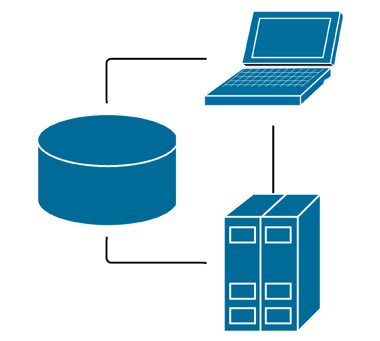
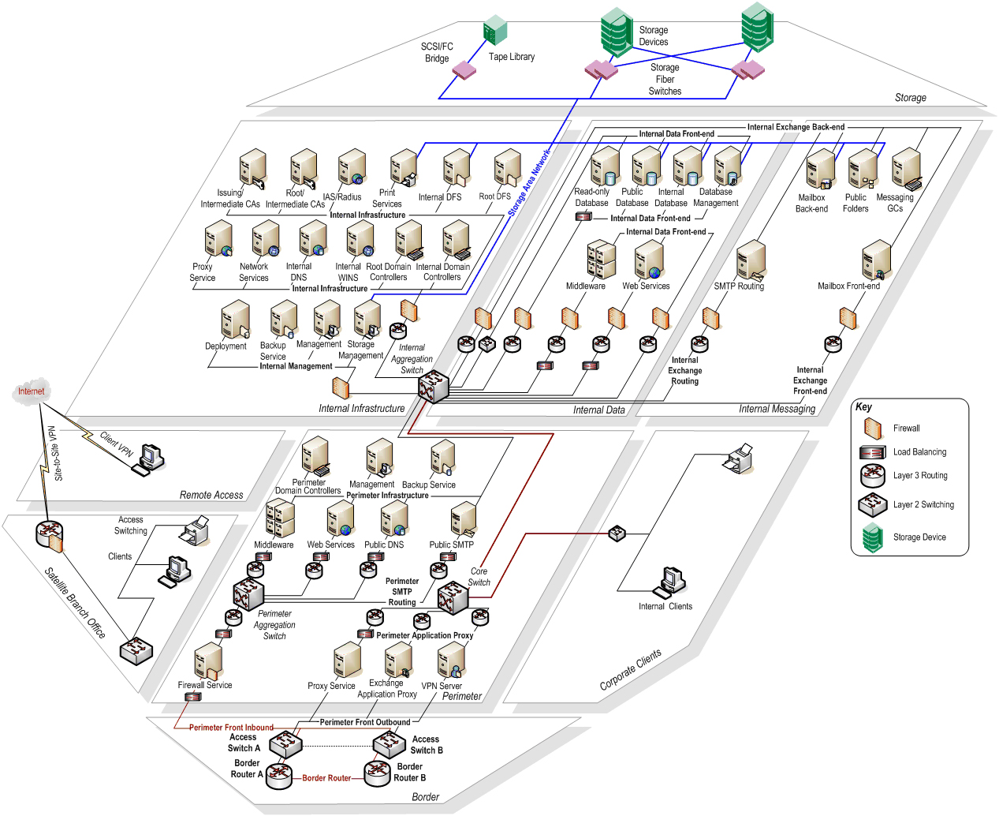
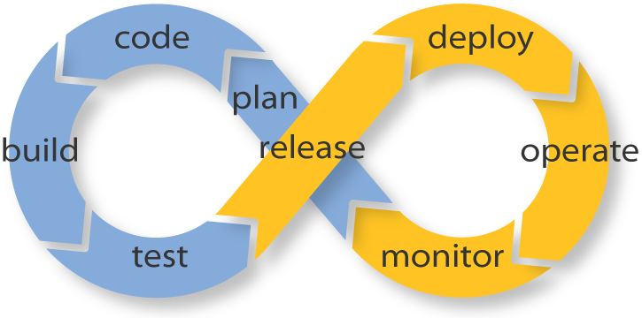
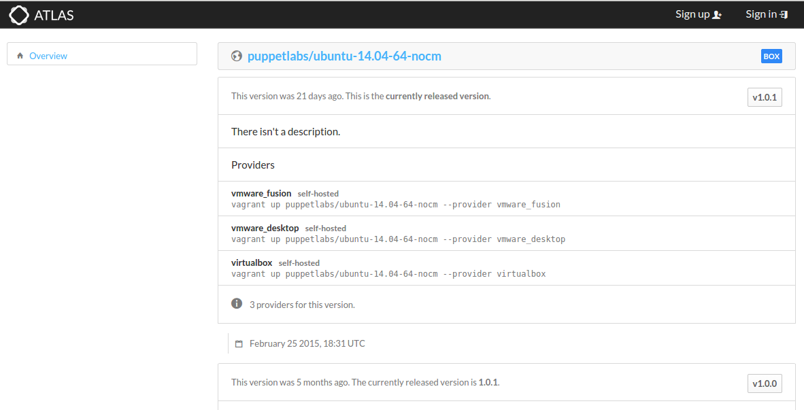

Puppet
Wprowadzenie do technologii
by Krzysztof Suszyński | @ksuszynski

Hej!
Krzysztof Suszyński
- Ewangelizuje z Puppet i Java
- Główny Programista w COI / właściciel Wave Software
- Od 2014r. współpraca z
- Z DevOps pierwszy raz w 2010 roku
- Duże wdrożenia z DevOps / Puppet
- Prezentacje na User Groups i szkolenia pracowników
- Wiele OS modułów: JBoss, Glassfish, XtreemFS, Artifactory, Flyway, Herald


Jak będzie wyglądał warsztat?
- ~9 tematów:
- Wstęp teoretyczny
- Samodzielna praca
- Przerwa
- Mikro projekt
- Obiad koło 13
Co przed nami?
- Czym jest DevOps i gdzie w tym Puppet?
- Sposoby pracy z Puppet
- Instalacja Puppet na systemie operacyjnym
- Architektura master - agent w Puppet
- Podstawowe typy takie jak file, service, user czy package
- Składnia deklaratywnych manifestów
- Zasoby i zarządzanie kolejnością
- Klasy i definicje
- Wstęp do testowania i tryb bez operacyjny
- Kompilacja, katalogi oraz raportowanie
Dyskusja
- Jakie cele mam na tym warsztacie?
- Czy potrafię wskazać na czym najbardziej mi zależy?
- Czy mam już plan jak wykorzystać zdobytą tu wiedzę?
Przyjrzyjmy się problemom w IT
pomiędzy rozwojem aplikacji a utrzymaniem
Zmiana
Zmiana to jedyna pewna rzecz w każdej firmie
Powinna być wykorzystana i sprawnie wprowadzona
Zmiana
Nie powinna prowadzić do strachu w żadnym z działów w firmie
Nie powinna oznaczać zwiększonego stresu
Nie powinna oznaczać konieczności "gaszenia pożarów"
Dalsze wyzwania
- Niska komunikacja = konflikty i niska efektywność
- Programiści nie wdrażają spójnego software'u
- Administratorzy mają tendencję do opierania się zmianom
- Proces wytwarzania jest najczęściej zwinny
- Proces utrzymania jest najczęściej statyczny
- Coraz potężniejsze, rozproszone rozwiązania
Devs vs Ops
| Developerzy | Administratorzy | |
|---|---|---|
| Zainteresowanie | Szybkie zmiany | Stabilność środowiska |
| Skala |  |  |
| Cytaty | " It works on my machine" |
" It's not server, it's your code" |
Rozwiązanie?
DevOps
Definicja
"DevOps to praktyka codziennej współpracy i współtworzenia zespołów administracyjnych z zespołami programistów"
Założenia DevOps
- DevOps stosujemy w trakcie trwania całego cyklu życia danej usługi lub dłużej
- Od momentu jej projektowania, przez wykonanie, wdrożenie i utrzymanie
- Poprzez stosowanie wspólnych narzędzi i praktyk
- Automatyzację pracy i mikro wdrożenia
DevOps w punktach
- Infrastucture as a Code
- Continuous build
- Continuous testing
- Continuous inspection
- Continuous integration
- Continuous delivery
- Continuous configuration enforcement
- Continuous deployment
- Continuous monitoring
- Continuous recovery
- Continuous scaling
Zadanie 1
Dla każdego z podpunktu wymienić kilka narzędzi bądź rozwiązań
Proszę użyć internetu i własnych doświadczeń :-)
Kilka uwag!
Czym DevOps nie jest?!
To nie jest No-Ops
- "oni zabiorą nam nasze posady"
- współdzielenie odpowiedzialności a nie pozbycia się jej
- współpraca a nie odebranie jej
- uwolnienie ukrytych mocy
Nie chodzi (tylko) o narzędzia
- przekonanie, że w DevOps chodzi głownie o zastosowanie nowych narzędzi w pracy, takich jak Puppet czy Chef
- praktyka wspólnej pracy
- wytworzenie kultury i nawyków spójnych z Agile
Nie chodzi (tylko) o kulturę
- potrzebne są narzędzia spełniające wymagania obu stron
- narzędzia te muszą wspierać nawyki wspólnej pracy
- obie strony muszą czerpać korzyści
Nie chodzi (tylko) o połączenie Dev i Ops
- obejmuje również: administratorach sieci
- specjalistów bezpieczeństwa
- architektów systemów
- analityków
Nie chodzi (tylko) o tytuł posady
- bez faktycznej zmiany sposobu pracy nie będzie dużych sukcesów
- zmiana musi być po obu stronach
Nie chodzi o wszystko, wszędzie
- po złym wprowadzeniu, upraszcza się DevOps do rozwodnionego Agile
- lub "miłości" do wszystkich
Proces DevOps
Krótkie szybkie iteracje
Zmiana w całej firmie

Zadanie 2
Dyskusja
- Co myślisz o DevOps?
- Czy potrafisz wskazać podobne problemy w swojej organizacji?
- Czy DevOps różni się znacznie od innych podejść?
- Na co należy uważać przy DevOps?
Zapis infrastruktury jako kod
Configuration enforcement
Zapis infrastruktury jako kod przetwarzany i wykonywalny jest KLUCZOWY dla DevOps
Daje możliwość pracy w niedużych iteracjach.
“To co było zapisane w postaci kodu zadziałało, problem był w tych elementach, których jeszcze nie automatyzowaliśmy. Zróbmy to!”
Sposoby pracy z narzędziami configuration management
Praca bezpośrednio na docelowej infrastrukturze
- Nie polecam
- Niebezpieczne i jedno dostępne
- Szczątkowe możliwości testowania
- Możliwość używania środowisk
Najpopularniejsze i polecane przez Puppetlabs :-(
Wykorzystanie narzędzi typu Vagrant
- W miarę wygodne i proste
- Bezpieczne
- Możliwe dogłębne testowanie
- Możliwe wykorzystanie systemów CI
Tak będziemy pracować na tym warsztacie
Wykorzystanie separacji modułów
- Wymaga ekosystemu developerskiego Puppet
- Bezpieczne, wielodostępne i skalowalne
- Możliwe pełne testowanie i separacja na odpowiedzialności
- Konieczne wykorzystanie systemów CI i CD
- Wykorzystanie zaawansowanych testów rspec i beaker
Najlepszy sposób pracy lecz zaawansowany
Vagrant
Typowe narzędzie fazy rozwoju i wstępnego testowania rozwiązań. Pozwala na:
- szybkie zarządzanie obrazami maszyny wirtualnej
- zarządzanie połączeniami sieciowymi
- miejscem współdzielonym
- uruchamianiem na maszynie wirtualnej skryptów i narzędzi configuration management
Kluczowe funkcje Vagranta
- dostarcza poleceń linii komend do sterowania maszyną lub maszynami wirtualnymi
- pozwala na zapis konfiguracji w pliku Vagrantfile
- posiada szereg wbudowanych providerów: VirtualBox, VMWare, Docker, Hyper-V
- posiada szereg wbudowanych provisionerów: Shell, Chef, Puppet, Ansible, Docker, Salt, CFEngine
- posiada system wtyczek i istnieje wiele publicznych wtyczek
- posiada prostą instalację w postaci pliku DEB, RPM, MSI lub DMG
- dostarcza automatycznej konfiguracji sieci oraz folderów współdzielonych
Instalacja
Vagrant
# All commands as root
echo 'deb http://download.virtualbox.org/virtualbox/debian trusty contrib' >
/etc/apt/sources.list.d/virtualbox.list
wget -q https://www.virtualbox.org/download/oracle_vbox.asc -O- | apt-key add -
apt-get update
apt-get install virtualbox-5.0
curl -kL https://dl.bintray.com/mitchellh/vagrant/vagrant_1.7.2_x86_64.deb -o vagrant_1.7.2_x86_64.deb
dpkg -i vagrant_1.7.2_x86_64.debBazowe obrazy do Vagranta
 https://atlas.hashicorp.com/boxes/searchNowe środowisko dla Vagranta
$ vagrant init puppetlabs/ubuntu-14.04-64-nocm
A `Vagrantfile` has been placed in this directory. You are now
ready to `vagrant up` your first virtual environment! Please read
the comments in the Vagrantfile as well as documentation on
`vagrantup.com` for more information on using Vagrant.
$ _Przykładowy plik Vagrantfile
# -*- mode: ruby -*-
# vi: set ft=ruby :
# Vagrantfile API/syntax version. Don't touch unless you know what
VAGRANTFILE_API_VERSION = "2"
Vagrant.configure(VAGRANTFILE_API_VERSION) do |config|
# Every Vagrant virtual environment requires a box to build off o
config.vm.box = "puppetlabs/ubuntu-14.04-64-nocm"
# Enable provisioning with Puppet stand alone. Puppet manifests
# are contained in a directory path relative to this Vagrantfile.
# You will need to create the manifests directory and a manifest
# the file default.pp in the manifests_path directory.
#
# config.vm.provision "puppet" do |puppet|
# puppet.manifests_path = "manifests"
# puppet.manifest_file = "site.pp"
# end
endKonfiguracja sieci, procesora i pamięci
Vagrant.configure(2) do |config|
config.vm.network :private_network, ip: "192.168.50.4"
config.vm.provider :virtualbox do |v|
v.memory = 1024
v.cpus = 2
end
endUruchomienie maszyn w środowisku
$ vagrant up
Bringing machine 'default' up with 'virtualbox' provider...
==> default: Importing base box 'puppetlabs/ubuntu-14.04-64-nocm'.
==> default: Matching MAC address for NAT networking...
==> default: Checking if box 'puppetlabs/ubuntu-14.04-64-nocm' is
==> default: Setting the name of the VM: tmp_default_1426727671461
==> default: Clearing any previously set network interfaces...
==> default: Preparing network interfaces based on configuration..
default: Adapter 1: nat
==> default: Forwarding ports...
default: 22 => 2222 (adapter 1)
==> default: Booting VM...
==> default: Waiting for machine to boot. This may take a few minu
default: SSH address: 127.0.0.1:2222
default: SSH username: vagrant
default: SSH auth method: private key
==> default: Machine booted and ready!
==> default: Checking for guest additions in VM...
==> default: Mounting shared folders...
default: /vagrant => /tmp
$ _Sesja SSH w środowisku
$ vagrant ssh
Welcome to Ubuntu 14.04 LTS (GNU/Linux 3.13.0-24-generic x86_64)
* Documentation: https://help.ubuntu.com/
vagrant@localhost:~$ uptime
18:17:47 up 3 min, 1 user, load average: 0.00, 0.00, 0.00
vagrant@localhost:~$ logout
Connection to 127.0.0.1 closed.
$ _Zweryfikowanie stanu maszyny
Aby sprawdzić jaki jest aktualny stan maszyny w ramach konfiguracji, należy wywołać polecenie vagrant status.
Usunięcie maszyny
Aby skasować maszynę wykonać należy polecenie vagrant destroy.
Zaopatrywanie w konfigurację
Vagrant.configure("2") do |config|
config.vm.box = "puppetlabs/ubuntu-14.04-64-puppet"
# Provision with Bash
config.vm.provision :shell, inline: "echo Hi $(cat /etc/issue)"
# Provision with Puppet apply
config.vm.provision :puppet do |puppet|
puppet.manifests_path = "manifests"
# contains: "package { 'elinks': ensure => 'installed', }"
puppet.manifest_file = "default.pp"
end
endWynik zaopatrywania w konfigurację
$ vagrant provision
==> default: Running provisioner: shell...
default: Running: inline script
==> default: Hi Ubuntu 14.04.2 LTS \n \l
==> default: Running provisioner: puppet...
==> default: Running Puppet with default.pp...
==> default: Notice: Compiled catalog for localhost.suszynski.org
in environment production in 0.08 seconds
==> default: Notice: /Stage[main]/Main/Package[elinks]/ensure:
ensure changed 'purged' to 'present'
==> default: Notice: Finished catalog run in 4.88 seconds
$ _Wtyczki
do Vagranta
github.com/mitchellh/vagrant/wiki/Available-Vagrant-Plugins
- landrush - Lokalnego micro DNS, który automatycznie przyznaje maszynom IP. Działa zarówno w maszynach wirtualnych jak i na hoście
- sahara - Możliwość wykonywania migawek stanu, przywracania stanu i potwierdzania zmian
Vagrant
Demo
Zadanie 3
- Zainstalować Vagranta
- Przygotować maszynę z obrazu:
puppetlabs/ubuntu-14.04-64-nocm - Zainstalować podstawowe pakiety: git, htop, telnet, itp. i sprawdzić separację ze swoim systemem
- Zatrzymać, usunąć, postawić na nowo, na koniec usunąć
Jedno z najbardziej dojrzałych narzędzi DevOps
Czytelność Puppet
package { 'postgresql':
ensure => 'installed',
}
service { 'postgresql':
ensure => 'running',
enable => true,
require => Package['postgresql'],
}
Co to znaczy? Na pierwszy rzut oka?
Zalety Puppet
Dostarcza możliwości zapisania oczekiwanego stanu infrastruktury IT
Wymuszenia wykonania zmian dostosowującego ją do tegoż stanu
Wszystkie elementy składowe to open-source
Prosty język manifestów naturalnie przyjazny administratorom
Silnik Puppeta składa się z zestawu komend konsoli systemu, które również można efektywnie wykorzystywać w oderwaniu od Puppeta
Zalety Puppet - c.d.
Język DSL w postaci deklaratywnej tzn. 4 generacji podobnie jak SQL
Brak podejścia "all or nothing", można go wprowadzać na dowolnym etapie zaawansowania projektu
Największa społeczność użytkowników
Możliwość prostego rozszerzenia silnika Puppeta w postaci zarówno manifestów Puppet jak i kodu niskopoziomowego Ruby
Wytwarza naturalny podział pracy: programiści piszą kod w Ruby a administratorzy używają prostszych manifestów
Zalety Puppet - c.d. 2
Największa ilość gotowych do użycia modułów i rozszerzeń
Moduły pisane i utrzymywane przez firmę Puppetlabs
Dogłębne testowanie jednostkowe, "dymne", integracyjne i akceptacyjne
Możliwość symulowania zmiany w systemie
Dokładne, szczegółowe raportowanie
Bezpieczna i skalowalna architektura agent --> serwer
Zalety Puppet - c.d. 3
Wsparcie i integracje z innymi narzędziami np. Vagrant, VMWare, OpenStack
Wsparcie enterprise firmy Puppetlabs i Red Hat, oraz dodatkowe bardzo przydatne narzędzia takie jak Enterprise Console, Razer czy Cloud Provisioning
Wsparcie dla największej liczby systemów operacyjnych: Linux (RHEL i podobne, Debian i podobne), Suse, AIX, Solaris, Windows, Mac OSX
Największe wsparcie dla edytorów kodu, systemów weryfikacji i budowania oraz integracji ciągłej
Puppet
Jak działa?
Proces działania

Klasyfikacja

Proces wprowadzania zmiany

Sposoby instalacji Puppet
- z pakietów dostępnych w systemie operacyjnym
- z rubygems
- z pakietów z repozytoriów puppetlabs
- instalator wersji Enterprise
Uwaga! Przed instalacją Puppet należy ustawić pełną nazwę domenową (FQDN) i poleca się zainstalowanie i uruchomienie usługi synchronizacji czasu ntp!
Demo
Instalacja Puppet
Zadanie 4
- Używając Vagranta utworzyć snapshot przy użyciu sahara i zainstalować puppet z rubygems
- Uruchomić
puppet apply manifest.pp, dwukrotnie, sprawdzając efektpackage { 'nginx': ensure => 'installed', } - Przywrócić snapshot przy użyciu sahara i zainstalować puppet z repozytoriów puppetlabs
- Redo #2 (użyj też trybu
--nooporaz--debug)
Zadanie 5
Dyskusja
- Czy praca z Vagrantem wydaje się prosta?
- Jakie problemy mogą się pojawić? Na co uważać?
- Jakie widzisz plusy i minusy?
Opis ekosystemu Puppet
Puppet składa się z kilku luźno powiązanych ze sobą narzędzi i systemów.
Dzięki temu daje możliwość używania ich niezależnie
Facter
Narzędzie działające między innymi w konsoli systemowej. Jego zadaniem jest wyliczanie faktów na temat maszyny na której został uruchomiony.
Facter - przykład
$ facter
architecture => amd64
ipaddress => 172.17.42.1
kernel => Linux
kernelmajversion => 3.11
kernelrelease => 3.11.0-26-generic
kernelversion => 3.11.0
lsbdistcodename => saucy
lsbdistdescription => Ubuntu 13.10
lsbdistid => Ubuntu
lsbdistrelease => 13.10
lsbmajdistrelease => 13.10
operatingsystem => Ubuntu
operatingsystemmajrelease => 13.10
operatingsystemrelease => 13.10
osfamily => Debian
puppetversion => 3.2.4
rubyplatform => x86_64-linux
rubyversion => 1.9.3
timezone => CET
uniqueid => 007f0100
uptime => 1 day
uptime_days => 1
uptime_hours => 45
uptime_seconds => 165504
virtual => physical
$ _
Zadanie 6
- Uruchom polecenie:
facter ipaddress - Uruchom polecenie:
facter fqdn - Uruchom polecenie:
facter operatingsystem - Uruchom polecenie:
facter - Co zwracają te polecenia? Jak można to wykorzystać?
Augeas
Narzędzie elastycznego zmieniania konfiguracji plików. Potrafi inteligentnie zmieniać treść bardzo wielu różnych formatów plików, selektywnie, zmieniając jedyne pożądaną wartość i nie zmieniając nic w przypadku pełnej zgodności.
Augeas
$ augtool
augtool> get /files/etc/postgresql/9.1/main/postgresql.conf/max_connections
/files/etc/postgresql/9.1/main/postgresql.conf/max_connections = 100
augtool> set /files/etc/postgresql/9.1/main/postgresql.conf/max_connections 130
augtool> get /files/etc/postgresql/9.1/main/postgresql.conf/max_connections
/files/etc/postgresql/9.1/main/postgresql.conf/max_connections = 130
augtool> saveDemo
Augeas
Hiera
Hierarchiczna, prosta baza danych dzięki której możliwe są kontekstowe konfiguracje.
Hiera - graf
/------------- DC1 -------------\ /------------- DC2 -------------\
| ntpserver: ntp1.dc1.example.com | | ntpserver: ntp1.dc2.example.com |
| sysadmin: dc1noc@example.com | | |
| classes: users::dc1 | | classes: users::dc2 |
\-------------------------------/ \-------------------------------/
\ /
\ /
/------------- COMMON -------------\
| ntpserver: 1.pool.ntp.org |
| sysadmin: sysadmin@%{domain} |
| classes: users::common |
\----------------------------------/
Demo
Hiera
puppet resource
Możliwość uruchamiania puppeta dla konkretnych pojedynczych zasobów i listowania ich
puppet resource - przykład
# puppet resource user ksuszynski
user { 'ksuszynski':
ensure => 'present',
comment => 'Krzysztof Suszynski,,,',
gid => '1000',
groups => ['adm', 'sudo', 'docker'],
home => '/home/ksuszynski',
shell => '/bin/bash',
uid => '1000',
}Demo
puppet resource
Zadanie 7
- Utwórz użytkownika:
useradd -s /bin/bash -b /home twoje-imie - Uruchom polecenie:
puppet resource user twoje-imie - Ustaw hasło:
passwd twoje-imie - Sprawdź, uruchamiając polecenie:
puppet resource user twoje-imie - Zmień shell przy użyciu:
puppet resource user twoje-imie shell=/bin/sh - Wykonaj i sprawdź wynik:
puppet resource user - Co zwracają te polecenia? Jak można to wykorzystać?
Podstawa składni DSL Puppet
Język Puppet
Język Puppet zapisywany jest w manifestach
Manifesty są grupowane w moduły
Manifesty mogą zawierać definicje, klasy lub wywołania zasobów
Zasób Puppet
Zasobem jest każdy pojedynczy deklaratywny element, który puppet może wymusić
service { 'apache2':
ensure => 'running',
}Puppet posiada wiele wbudowanych zasobów
Podstawowe zasoby
- file
- service
- package
- exec
- user
- group
- augeas
file
Potrafi zarządzać plikami, katalogami i linkami symbolicznymi. Dodatkowo kopiować pliki i katalogi.
file { '/etc':
ensure => 'directory',
mode => '0755',
}
file { '/etc/acme-motd':
ensure => 'file',
content => 'Hello from Acme Datacenter managed by Puppet!',
mode => '0644',
}
file { '/etc/motd':
ensure => 'link',
target => '/etc/acme-motd',
}package
Potrafi zarządzać pakietami przy użyciu YUM, APT, GEM, PIP i wielu innych.
package { 'ruby':
ensure => 'installed',
}
package { 'lolcat':
ensure => 'installed',
provider => 'gem',
}service
Potrafi zarządzać usługami w systemie.
service { 'apache':
ensure => 'running',
enable => true,
hasrestart => true,
hasstatus => true,
}user
Zarządza użytkownikami w systemie
user { 'ksuszynski':
ensure => 'present',
shell => '/bin/bash',
groups => ['admin', 'user'],
}exec
Pozwala na uruchamianie poleceń w systemie
exec { '/usr/bin/yes yes | bundle exec rake gitlab:setup':
unless => '/usr/bin/test -f /opt/gitlab/.db_done',
timeout => 600,
environment => ['RAILS_ENV=production'],
}
Kolejność
Zasoby tworzą graf w którym określamy kolejność wykonania
service { 'apache2':
ensure => 'running',
require => Package['apache2'],
}
package { 'apache2':
ensure => 'installed',
}require, before, subscribe, notify
Polecany flow
install -> configure ~> service
package { 'openssh-server':
ensure => 'installed',
}
file { '/etc/ssh/sshd_config.conf':
ensure => 'file',
content => template('myssh/sshd_config.conf.erb'),
require => Package['openssh-server'],
}
service { 'ssh':
ensure => 'installed',
subscribe => File['/etc/ssh/sshd_config.conf'],
}Zadanie 8
- Napisz prosty manifest instalujący i uruchamiający jedną z usług: apache, nginx, postgres, mysql
- Sprawdz manifest przy użyciu:
puppet parser validate plik.pp - Uruchom przy użyciu Vagrant
- Wykorzystaj typy package, service, file i user
- Pamiętaj o ustawieniu kolejności
- Zatrzymaj usługę "ręcznie":
service ... stopi uruchom Puppet ponownie - Wywołaj w trybie debug
Zmienne
W języku DSL Puppet występuje możliwość tworzenia i wykorzystywania zmiennych
Wbrew nazwie, raz ustalonej zmiennej nie można zmienić
$service = 'apache2'
service { $service:
ensure => 'running',
require => Package[$service],
}
package { $service:
ensure => 'installed',
}
Fakty są dostępne w przestrzeni globalnej np.: $::fqdn
Wyrażenia warunkowe
W języku DSL Puppet występuje zestaw wyrażeń warunkowych
if $::osfamily == 'Debian' {
$service = 'apache2'
} else {
$service = 'httpd'
}Warunki case
case $::operatingsystem {
'RedHat', 'CentOS': { $service = 'httpd' }
/^(Debian|Ubuntu)$/:{ $service = 'apache2' }
default: { fail("Unsupported platform: ${::operatingsystem}") }
}Selektory
$rootgroup = $::osfamily ? {
'Solaris' => 'wheel',
/(Darwin|FreeBSD)/ => 'wheel',
default => 'root',
}
file { '/etc/passwd':
ensure => 'file',
owner => 'root',
group => $rootgroup,
}Funkcje
if str2bool($::is_virtual) {
fail('unsupported')
} else {
include ntp
}
W tym przykładzie funkcje to fail, include oraz str2bool.
Zadanie 9
- Napisz manifest instalujący i uruchamiający usługę apache
- Powinna ona zawierać warunkową obsługę dla rodzin systemów Debian i Red Hat
- Sprawdź manifest przy użyciu:
puppet parser validate plik.pp - Uruchom przy użyciu Vagrant
- Pamiętaj o ustawieniu kolejności
Sposoby uruchamiania
resource
apply
agent
Tryb agent
Puppet łączy się do serwera i pobiera z niego konfigurację
Dostęp tylko po SSL z zaufanym certyfikatem
Kompilacja na serwerze, wykonanie na agencie
Tryb agent
demo
Zadanie 10
- Używając Vagranta uruchomić 2 maszyny master i agent
- Zainstalować na obu puppet
- Połączyć agenta do mastera
- Ma masterze dodać kod i przydzielić go dla agenta
- Uruchomić agenta
Wstęp do testowania
Sposoby testowania
Puppet posiada szereg możliwości testowania
puppet parser validatei puppet-lint- smoke testy i tryb bezoperacyjny
- rspec-puppet
- beaker
Nie będziemu tu mówić o 2 ostatnich
Walidacja poprawności manifestów
- IDE - polecam w szczególności na początku Geppetto, ale też Atom czy Intellij
- puppet-lint
- puppet parser validate
Tryb bezoperacyjny
Unikalna funkcjonalność puppet
Pozwala uruchamianie manifestów bez wprowadzania zmian
Flaga: --noop
Smoke testy Puppet
W Puppet smoke testy to po prostu uruchamianie manifestów, specjalnie przygotowanych w katalogu tests w trybie bezoperacyjnym --noop
puppet apply tests/apache.pp --noopZadanie 11
- Wykorzystując kod z zadania 9 przetestować działanie trybu bezoperacyjnego
- Przywrócić maszynę do stanu początkowego - sahara lub vagrant destroy
- Uruchomić kod z flagą
--noop
Struktura kodu Puppet
Modułowość
Kod puppet umieszczamy w:
- modułach
- klasach
- definicjach
Struktura modułu
mymodule # This outermost directory’s name matches the
│ # name of the module.
├── manifests # Contains all of the manifests in the module.
│ └── init.pp # Contains a class definition. This class’s
│ # name must match the module’s name.
├── metadata.json # Contains META information about module
├── spec # Contains spec tests for any plugins in the
│ # lib directory.
├── templates # Contains templates, which the module’s
│ # manifests can use.
├── files # Contains files to be sourced
├── tests # Contains examples showing how to declare
│ │ # the module's classes and defined types.
│ └── init.pp
└── lib # Contains plugins, like custom facts and
│ # custom resource types.
└── puppet
├── provider
└── typeModuły 101
- Moduły znajdują się na PM
- Moduły zawierają kod Puppet
- Moduły posiadają określony układ
- Moduły mogą być prosto instalowane
Wiecej: http://slides.com/cardil/...
Klasy
- Klasy to nazwane bloki kodu Puppet
- Są definiowane w modułach do późniejszego użycia
- Nie są automatycznie wywoływane, muszą być dołączone do katalogu
- Generalnie opisują średnie i duże fragmenty funkcjonalności
- Nazwa może mylić z innymi językami programowania
Klasy przykład
class apache ($version = 'latest') {
package {'httpd':
ensure => $version, # Using the class parameter from above
before => File['/etc/httpd.conf'],
}
file {'/etc/httpd.conf':
ensure => file,
owner => 'httpd',
content => template('apache/httpd.conf.erb'), # Template from a module
}
service {'httpd':
ensure => running,
enable => true,
subscribe => File['/etc/httpd.conf'],
}
}Użycie klasy
# only once in catalog
# class is a resource
class { 'apache':
version => 'latest',
}
# or simply
include apache
include apacheDefinicje
- To bloki kodu puppet które mogą być wywołane wielokrotnie z różnymi parametrami
- Mogą być użyte jako proste makra dla powtarzających się operacji
Definicje - przykład
# /etc/puppet/modules/apache/manifests/vhost.pp
define apache::vhost ($port, $docroot, $servername = $title, $vhost_name = '*') {
include apache # contains Package['httpd'] and Service['httpd']
include apache::params # contains common config settings
$vhost_dir = $apache::params::vhost_dir
file { "${vhost_dir}/${servername}.conf":
content => template('apache/vhost-default.conf.erb'),
# This template can access all of the parameters and variables from above.
owner => 'www',
group => 'www',
mode => '644',
require => Package['httpd'],
notify => Service['httpd'],
}
}Zadanie 12
- Wykorzystując kod z zadania 11 utworzyć moduł puppet i przenieść kod do klas i definicji
- Przygotować smoke testy w
tests - Uruchomić testy z flagą
--noop - Uruchomić kod klas
Kompilacja, katalog i raportowanie
Kompilacja
- Puppet kompiluje kod wczytując klasy przypisane do węzła
- Sprawdzana jest kolejność i unikalność zasobów
- Powstaje katalog, plik json z konkretnymi zadaniami do wykonania w określonej kolejności
Katalog
- Katalog to wynik kompilacji
- Zawiera tylko te zasoby które mają się wywołać na danym węźle
- Zawiera konkretne wartości w tym treści plików i potrzebne hasła
Raport
- W trakcie uruchomienia generowany jest raport
- Raport może zostać zapisany lub wysłany do procesowa raportów
- Procesory raportów to Enterprise console i Herald
PE Console

Herald

Raporty
demo
Zadanie 13
- Wykorzystując poznane umiejętności napisz moduł puppeta instalujący i konfigurujący blog WordPress
- Instalacja interpretera PHP, serwera bazy danych, serwera www, konfiguracja użytkowników systemowych
- Nie zapomnij o testach dymnych
- Postaraj się zachować idempotencję
- Uruchom kod i przetestuj
Pełne szkolenia
Pełne szkolenia
- DevOps - zwinne dostarczanie aplikacji
- DevOps Foundations
- Podstawy języka i technologii Puppet
- Zaawansowane techniki użycia Puppet
- Rozszerzanie elementów ekosystemu Puppet
- Wprowadzenie do technologii Docker
- Continuous Integration z wykorzystaniem Jenkins